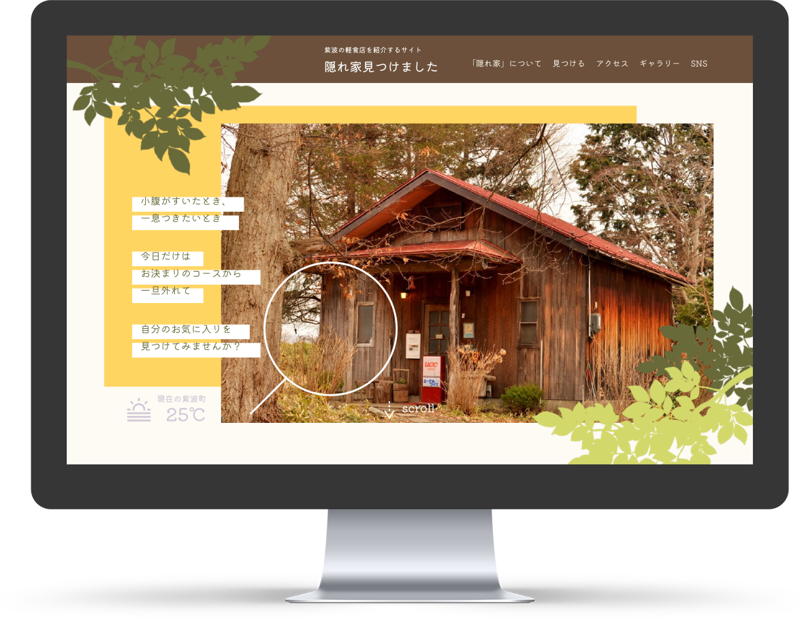
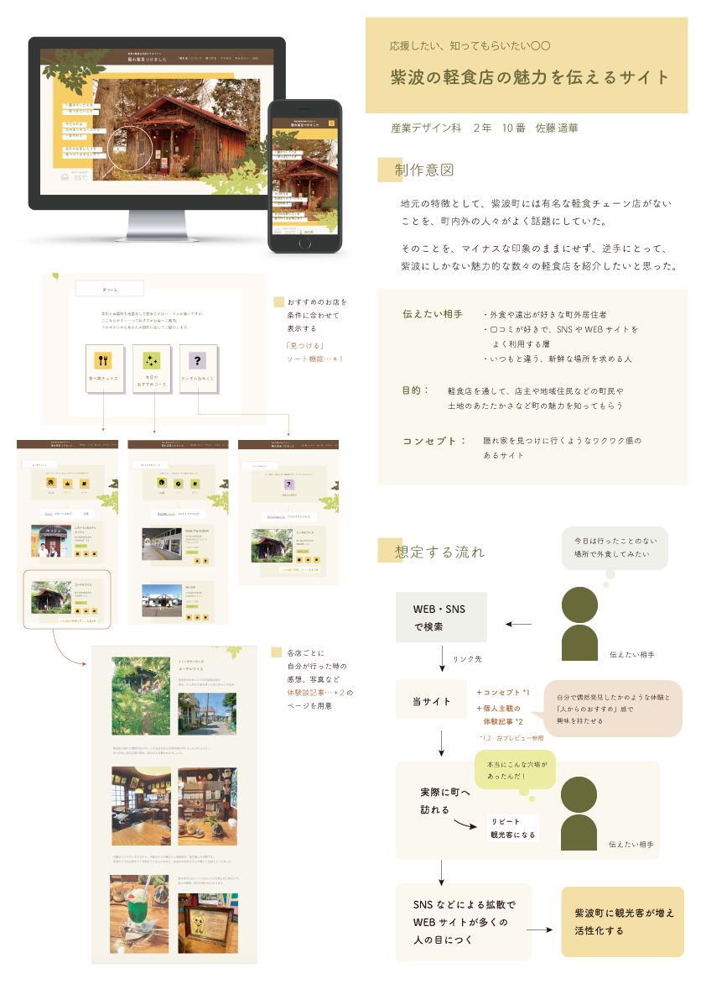

地元の軽食店の紹介サイト
「隠れ家見つけました」
1~2学年
製品デザイン基礎実習II,
製品デザイン応用実習

- 課題目標
- 自分の地元の魅力を調査し、伝えるツールを制作する
- ターゲット
- 普段から地元・紫波町内で外食をしない、
町民または町外出身者（年代、性別を問わない） - コンセプト
- 隠れ家を見つけたような気分になれるwebサイト
地元・紫波町は有名なチェーン店が少なく、自然が多い中で「隠れ家」的な魅力のある軽食店が点在していることに着眼し、「隠れ家」コンセプトの広報サイトを制作しました。 サイトを訪れた人がまさに「隠れ家」を見つけるような感覚で、地元の軽食店の紹介で魅力を知ってもらえるようなデザインを意識しています。
制作過程
1.制作要件に沿って調査
今回の課題は、デザイン制作企業で「地域を盛り上げるための企画」を募集する社内コンペに提案するという想定です。 そこで、今回の題材に選んだ地元の紫波町で、どんな人がどんな魅力を感じているのかという調査を行いました。
調査の結果、「紫波町には、有名な軽食チェーン店がない」という、町外出身者には驚かれ、町民にとっては不便というマイナスな印象があることがわかりました。 そこで、この町にしかないものを探したところ、長年紫波に暮らす自分も知らなかった、魅力的な軽食店をいくつか見つかりました。
2.目標設定
調査を踏まえ、「地域を盛り上げる企画」として、「紫波町の軽食店の紹介を通して、町の魅力を伝える」ことを目標としたWebサイトを制作することに決定しました。 「有名な軽食チェーン店はなくても、個性的なオリジナルの軽食店が多くある」というコンセプトのもと、Webサイトの設計に取り掛かります。
3.情報設計
コンセプトから、ターゲットを以下のように設定。
- 10代〜40代の町外出身者
- 旅行や、外食好き
- 口コミ好きでSNS、webサイトを閲覧する
また、ビジュアルコンセプトは、「隠れ家を見つけに行くようなワクワク感があるサイト」である。
4.プロトタイプ制作
情報設計をもとに、XDにてプロトタイプを作成した。
5.プレゼンテーション
今回の制作物の紹介を行い、以下のような講評をいただきました。
- 飲食関連の広報は、世の中に多く流通しているため、どこで差異をつけるかが必須
- UIが適切でない。特に、戻るボタンの位置がわかりづらい
- コード実装までしてほしい
といったご指摘をいただきました。 内容に関して、他の飲食関連の広報との差異が小さいということに気づき、コンテンツやビジュアルの改変の余地を感じました。また、UIの改善には、世の中に発信されているWebサイトの観察がより必要であることも分かりました。 これらの反省点を踏まえたWebサイトの改善案が必要であると実感しました。
6.ブラッシュアップ
講評での指摘を受け、プロトタイプの改善を行いました。 (改訂版モックアップは次章「ポイント」より)
ポイント
飲食広報としての差異を持たせるため、軽食店紹介の各詳細ページにて、自分自身の訪問体験記を載せることにより、口コミ好きのターゲットへの訴求力を上げるというコンテンツの追加を行いました。
ビジュアルコンセプトがより伝わるように、全体の装飾の改善も行いました。
